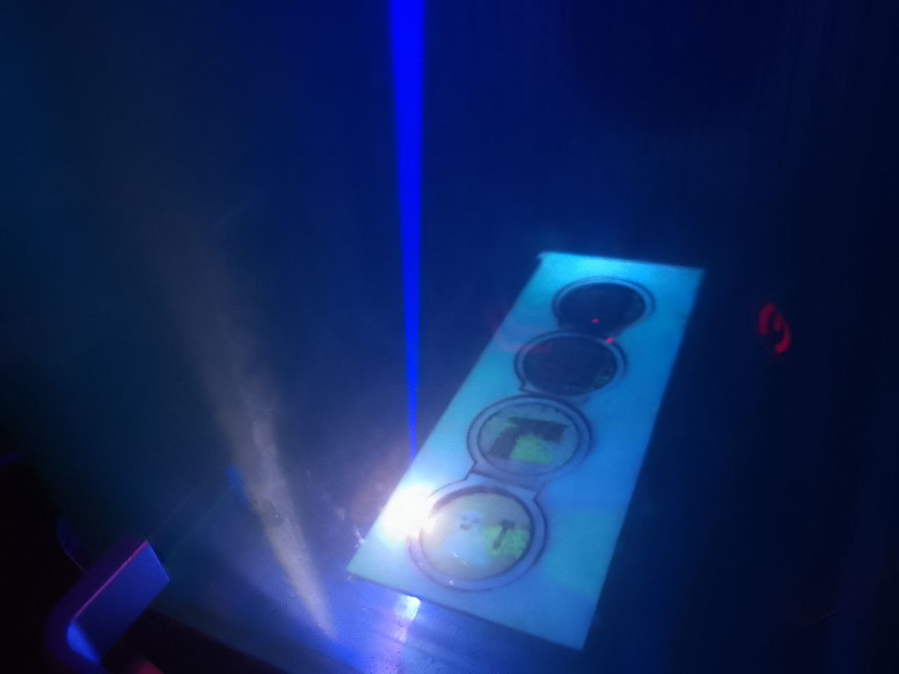
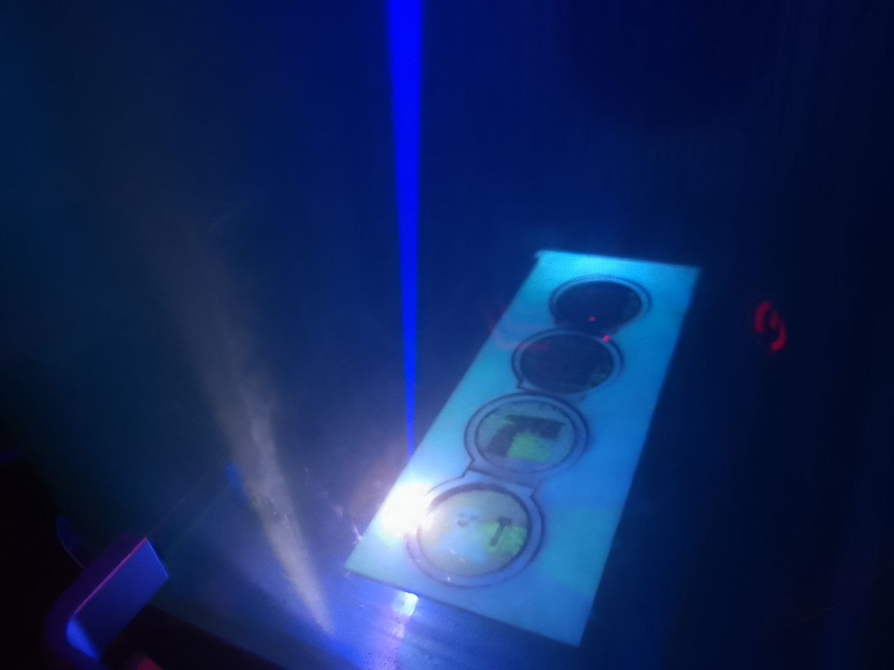
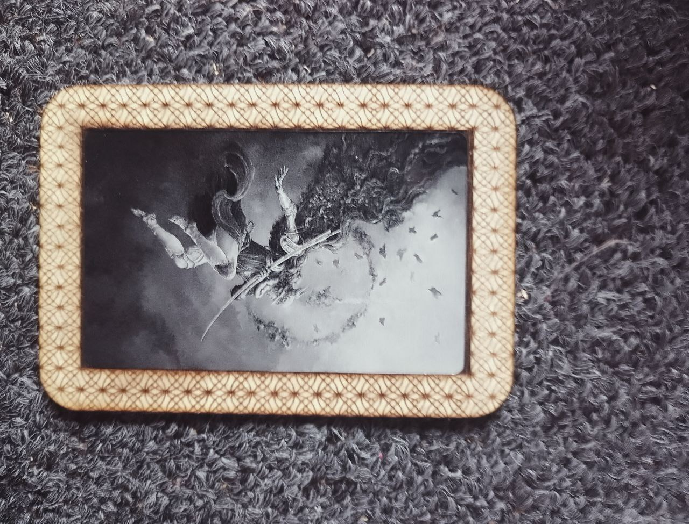
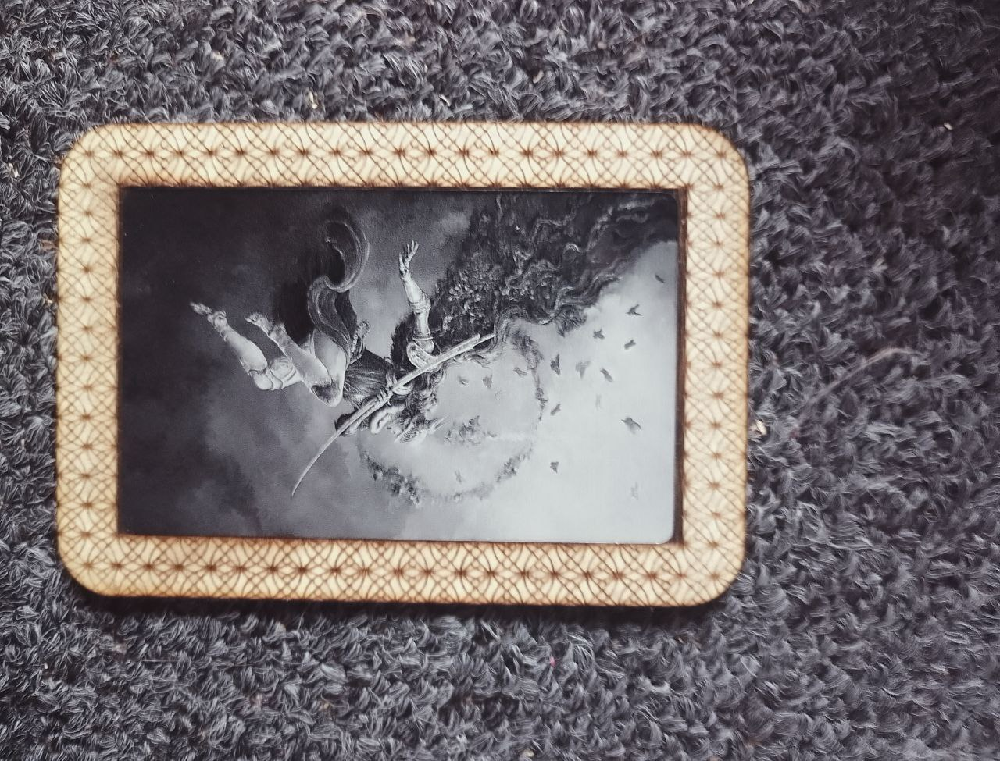
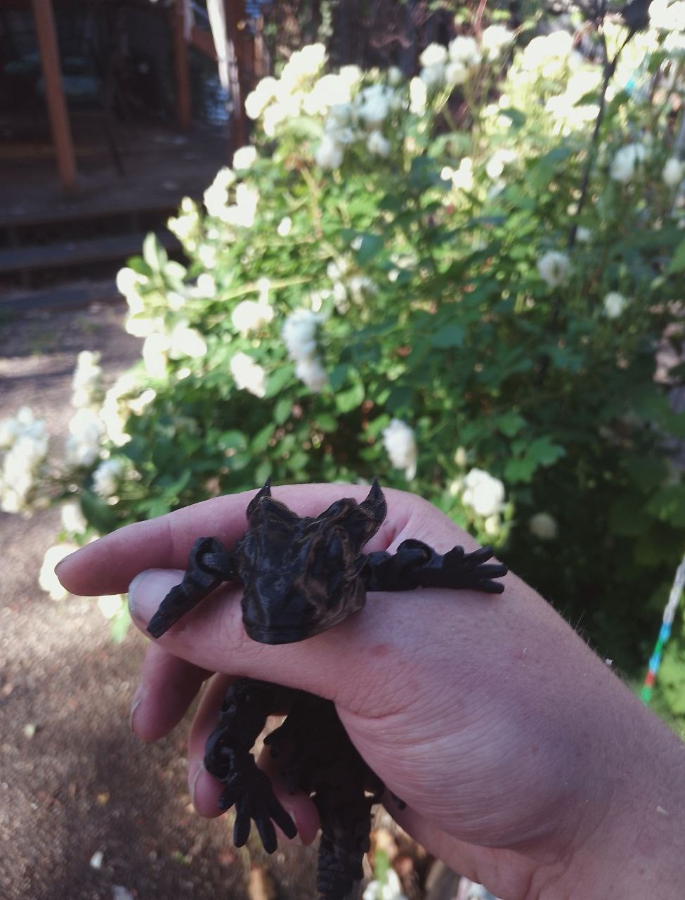
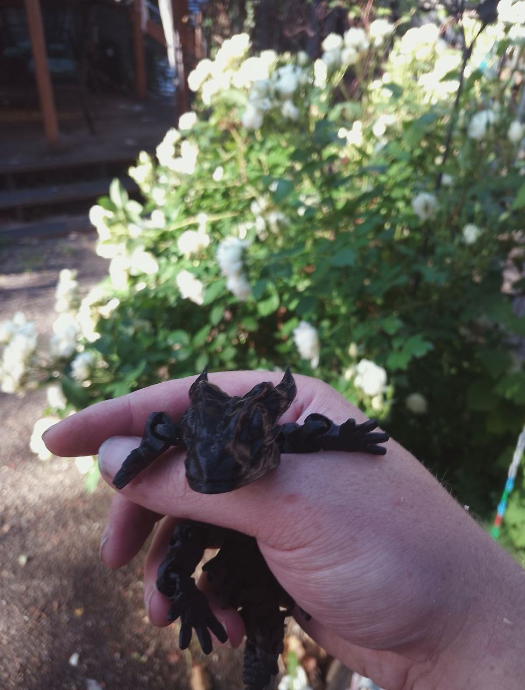

Universal Music Project
Universal Music Project
Check out my latest project for Universal Music Design! I had the incredible opportunity to build
their website, and let me tell you, it's not your average music site. Using the Web Audio API, I
implemented FFT analysis on all audio sources within the website. What does that mean? Well, it
means I created a fog simulator that reacts to the frequency and volume of the music playing.
Picture this: as the music plays, colorful fogs envelop the screen, each hue and intensity matching
the frequency and volume of the audio. It's like a visual symphony that lets the deaf experience
music in a whole new way. When you see purple fog, you know those high-pitched notes are hitting
just right. And when it's red, you can feel those deep bass tones rumbling through.
This project isn't just about creating a cool visual experience, though. It's about breaking barriers
and making music accessible to everyone. As Confluence, one of the world's first recording studios
founded by a Deaf Music Producer, proudly declares on their website: "We take pride in pushing
boundaries, creating an environment where innovation thrives, and where sound is not just heard but
felt on a profound level."
With this project, I aimed to embody that ethos, bridging the gap between sound and sensation, and
ensuring that music truly knows no bounds.
Alexis Reyna
Shakeitoffcatgroomz
Alexis, the owner of shakeitoffcatgroomz, is a deaf entrepreneur who is passionate about bringing
joy
to pets and their owners through her services. As a fellow member of the deaf community, I was
honored to work with Alexis and help her bring her vision to life.
Alexis approached me with a clear vision of what she wanted for her online storefront at
MoeGo. She needed a simple yet stylish website that could be
quickly loaded and personalized to her liking. Working within her budget, I was able to leverage the
latest
technologies to create a website that not only met but exceeded her expectations.
The website has a clean and modern design, with a user-friendly interface that allows visitors to
navigate with ease. Alexis wanted the website to be visually appealing, and I made sure to
incorporate
high-quality images that showcase her products in the best possible light.
Although the website is currently in its early stages, there is enormous potential for growth.
Alexis is
delighted with the website's current state, but we have discussed plans to expand it in the future.
As
her business grows, we will add more features and functionality to the website to keep it up-to-date
and
relevant to her customers.
Update:
Regrettably, like many other startups, Alexis' business struggled to attract enough clients and
eventually had to cease its operations. It's always disheartening to witness such setbacks,
especially
for a passionate entrepreneur like Alexis, who had a remarkable vision. While her business journey
took
an unexpected turn, we can still appreciate the effort and dedication she put into it.
Entrepreneurship
often involves ups and downs, and there's no doubt that Alexis will carry the valuable lessons
learned
into her future endeavors.
Mark V King
Made a website for a client!
It’s a Gatsby front end, with a headless wordpress on the backend, and a Disqus comment system… Ah,
yes,
and a google sheet contact form! Hosted on Netlify! I put everything together with the goal of
keeping
the monthly costs close to free as possible, and ease of use for Mark.
Why Gatsby?
Gatsby is a static site generator. The static sites it outputs is unmatched in speeds, due to
everything
being compressed down much as possible, far beyond what’s normally done with a hand-crafted website
from
ten years ago! This makes it so the website downloads and displays on people’s devices faster.
One of the many ways Gatsby achieves its speed is to pull in all of the contents it’ll be using from
all
over the place via GraphQL when it’s generating a static website, and merge all of the files that
makes
up the website into a single file with a minimum amount of white spaces in it!
A normal hand-made website from before Gatsby’s time would have a lot of files that needs to be
downloaded one at a time… Styles, pages, pictures, javascript, etc. When people’s devices are
downloading files, there is a bit of lag between files, which can easily add up to seconds before
the
website is finally completely loaded.
It’s faster to download a single file than many files, even if the single file is bigger than all of
the
other files put together!
And oh boy, there’s the plugins… Long story short, there’s a bunch of black magic going on out of
sight
deep within Gatsby’s guts. Goat sacrifices, cultist chanting, elder gods stirring in their slumbers,
etc. I’m still not quite sure what’s going on, but I like it! I’ll be using Gatsby more often down
the
road.
Why WordPress?
WordPress have a smartphone app for posting posts from, and is much easier to pull data from than
twitter or facebook. I figured that this would be the best option for Mark. Install the smartphone
app
on his phone, and have his nurses to make posts, with pictures, videos or whatever! Poke the app,
make
post, text away, post and done!
WordPress have a bunch of drawbacks if you’re also using it as the front end for your website… Slow
load
speeds, due to each visitors needing to download many, many files before the website displays.
There’s a
lot of moving parts on the server side too!
WordPress also doesn’t allow you to have custom styles unless you sign up for a monthly plan, among
other numerous limits.
Chopping the head off (Headless CMS!) solves a lot of those issues. Each time the Gatsby front end
is
rebuilt, it pulls all posts from WordPress. The power of the WordPress, and the speed of Gatsby,
folded
into a single entity!
Why Disqus?
Somehow linking up comments between wordpress and the gatsby front end was an option, but it turned
out
to be much easier to just throw a Disqus comment widget into the blog page, and have different
threads
to be loaded for each selected posts.
Disqus is also designed just for comments… So they have more support for comments. In WordPress’s
case,
it’s like being a jack of all trades, master of none. Using Disqus’s comment system instead of
WordPress’s comment system also makes it much easier to display comments in real time rather than
requiring the website to be destroyed and rebuilt each time someone posted a new comment.
Google Sheets? Are you crazy!?
A bit! My initial plan was to just use Netlify’s form system to handle the contact form, but it
turned
out that there was a limit to the number of forms the system would accept for a free account! 100
submission a month!
This work-around I implemented adds a lot of flexibility in that area. As it is now, messages sent
though
the contact form gets passed to a google script web app that appends the google sheet with the name,
email and message then email Mark’s Gmail with the information, along with a link to the google
sheet so
he won’t miss a single thing! Cool thing about this, in the gmail window, he’ll be able to just
click on
the email address to start writing an email to them right away! That wouldn’t had been possible with
Netlify’s system!
Why Netlify?
Netlify is one of the two options out there (Heroku is the other). I went with Netlify because for
months, I’ve heard nothing but praise from my nerdy friends about how easy Netlify makes everything.
I’m blown away! Netlify is a match made in heaven for Gatsby, because of the webhooks Netlify
provides.
Attach those hooks to something, and when that something changes, the hook’ll get tugged on which
trigger an action… In this case, a rebuild of the gatsby website! Soon as a new wordpress post is
made,
WordPress tugs on the webhook I dragged over from Netlify into wordpress’s guts to trigger a rebuild
of
the Gastby front end!
Total Montly Costs?
And in the end, I've managed to keep the monthly cost at zero for this set-up!
The sweetest thing is, if any part suddenly goes up into flames. Like, google dissolving somehow,
easy as
pie for me or any other nerds that have a vague understanding of what's going on here to pop out the
burning parts and plug in a different part! Take the comment system, for example, there's like ten
other
options out there! (And even more ways to craft one out of nothing... Like using google sheets!)
Wordpress goes down into flames? Find a new content management service and chop off the head then
attach
Gatsby over the bloody stump!
Nettlify goes nuclear? Heroku!
Everything but Gatsby melts down somehow? Self-hosting!
 

 



 



{kind=link}
{kind=link}